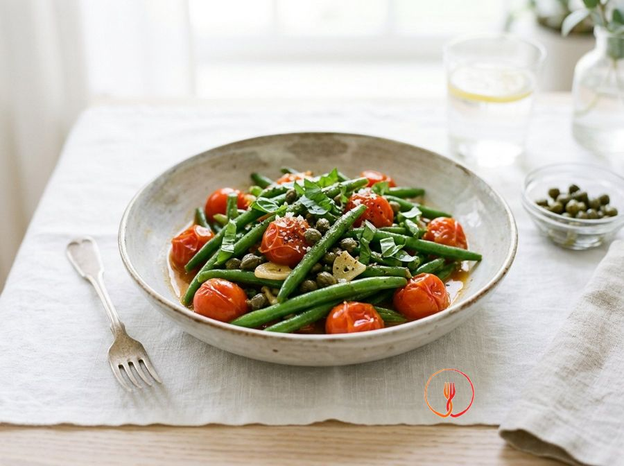

Fagiolini in Padella con Pomodorini e Capperi
Un contorno estivo classico e mediterraneo, dove la freschezza del pomodoro incontra il carattere dei capperi. Ideale per chi cerca un piatto leggero ma ricco di sapore.
Un contorno mediterraneo che esalta la freschezza dei fagiolini estivi. I pomodorini appassiti e i capperi sapidi creano un condimento saporito, perfetto per accompagnare secondi di pesce o carne.
Ingredienti
- Fagiolini freschi600 g
- Pomodorini ciliegino250 g
- Capperi sotto sale15 g
- Aglio1 spicchio
- Olio extravergine d'oliva30 ml
- Basilico fresco5 foglie
Allergeni
Nessuno dei 14 allergeni principali tra gli ingredienti.
Procedimento
- Inizia con la pulizia dei 600 g di fagiolini freschi: spuntali rimuovendo con le mani o un coltello l'estremità del picciolo e lavali accuratamente sotto acqua corrente fredda. Se i fagiolini sono particolarmente lunghi, tagliali a metà per renderli più facili da gestire in padella e da mangiare. Assicurati che siano ben sodi e di un colore verde uniforme prima di procedere. Consiglio dello chef: non rimuovere troppa polpa quando spunti i fagiolini, basta eliminare solo la parte terminale fibrosa.
- Porta a bollore una pentola capiente con abbondante acqua e aggiungi una presa di sale grosso, quindi immergi i fagiolini. Lasciali cuocere a fiamma media per circa 8 minuti, monitorando la consistenza con una forchetta affinché rimangano leggermente croccanti al cuore. Questa pre-cottura è fondamentale per mantenere il colore vivo e la consistenza ideale. Consiglio dello chef: aggiungi un pizzico di bicarbonato nell'acqua se desideri che i fagiolini mantengano un colore verde smeraldo brillantissimo.
- Mentre i fagiolini cuociono, dedica un momento alla preparazione degli aromi: sciacqua 15 g di capperi sotto sale per eliminare l'eccesso di sapidità e taglia 250 g di pomodorini ciliegino a metà o in quarti. Sbuccia lo spicchio d'aglio lasciandolo intero, in modo da poterlo rimuovere facilmente a fine preparazione. Questa organizzazione, chiamata 'mise en place', ti permetterà di gestire i passaggi successivi senza stress. Consiglio dello chef: schiaccia leggermente l'aglio con la lama piatta del coltello per favorire la fuoriuscita degli oli essenziali.
- In una padella antiaderente ampia, versa 30 ml di olio extravergine d'oliva e inserisci lo spicchio d'aglio preparato. Scalda a fiamma molto bassa per 2 minuti, lasciando che l'aglio imbiondisca lentamente e profumi l'olio senza mai bruciare. Quando l'aglio assume un colore dorato pallido e inizia a sfrigolare delicatamente, la base aromatica è pronta. Consiglio dello chef: inclina leggermente la padella per concentrare l'olio in un punto e friggere l'aglio in modo più uniforme.
- Aggiungi i pomodorini tagliati e i capperi dissalati nella padella, alzando la fiamma a un livello medio. Cuoci per circa 5 minuti, mescolando di tanto in tanto con un cucchiaio di legno affinché i pomodorini inizino ad appassire. Dovrai ottenere un sughetto leggero, colorato e profumato, sprigionato dal rilascio dell'acqua di vegetazione dei pomodori. Consiglio dello chef: non aggiungere sale in questa fase, poiché i capperi ne rilasceranno già una parte significativa durante la cottura.
- Scola i fagiolini dopo gli 8 minuti di bollitura e trasferiscili direttamente nella padella con il condimento di pomodorini e capperi. Alza la fiamma a un'intensità vivace e salta le verdure per 2-3 minuti, muovendo la padella con un movimento fluido del polso. I fagiolini devono legarsi perfettamente al sugo, diventando lucidi e saporiti. Consiglio dello chef: se noti che il condimento si asciuga troppo velocemente, aggiungi un cucchiaio di acqua di cottura dei fagiolini per mantenere il tutto succoso.
- Assaggia un fagiolino per verificare il grado di sapidità e la consistenza finale, regolando di sale solo se necessario. Mescola con cura un'ultima volta per assicurarti che i capperi e i pomodorini siano distribuiti uniformemente tra i fagiolini. Il risultato deve essere un piatto bilanciato, dove ogni ingrediente mantiene la sua identità visiva pur essendo ben amalgamato. Consiglio dello chef: una macinata di pepe nero fresco alla fine può aggiungere una nota speziata che esalta il sapore del pomodoro.
- Spegni il fuoco, rimuovi lo spicchio d'aglio e aggiungi le 5 foglie di basilico fresco spezzettandole grossolanamente con le mani. Questo gesto eviterà che il basilico si ossidi diventando nero e permetterà al calore residuo di sprigionare tutto il suo profumo mediterraneo. Servi i fagiolini in padella ancora caldi o a temperatura ambiente come contorno salutare e genuino. Consiglio dello chef: spezzetta il basilico solo all'ultimo secondo per preservare intatti gli oli volatili responsabili del suo aroma unico.
Consigli
- Assicurati di sciacquare bene i capperi sotto acqua corrente per eliminare l'eccesso di sale.
- Per mantenere i fagiolini croccanti e di un verde brillante, scolali subito dopo gli otto minuti di bollitura.
- Puoi conservare il piatto in frigorifero per un giorno in un contenitore ermetico.
Varianti
- Aggiungi delle olive taggiasche denocciolate per una nota sapida ancora più intensa.
- Sostituisci il basilico fresco con dell'origano secco per un aroma più rustico.
Valori nutrizionali (stima)
| Per porzione (210 g) | Per 100 g | |
|---|---|---|
| Energia | 502 kJ / 120 kcal | 239 kJ / 57 kcal |
| Proteine | 3.4 g | 1.6 g |
| Carboidrati | 13.5 g | 6.4 g |
| di cui zuccheri | 4.1 g | 2.0 g |
| Grassi | 7.0 g | 3.3 g |
| di cui saturi | 1.0 g | 0.5 g |
| Fibre | 4.8 g | 2.3 g |
| Sale | 0.48 g | 0.2 g |
Valori stimati con l'AI su dati medi CREA / USDA: sono indicativi e non sostituiscono il parere di un medico o di un nutrizionista.
Apri la ricetta nell'app per la lista della spesa, le schede ingredienti e i negozi vicini.